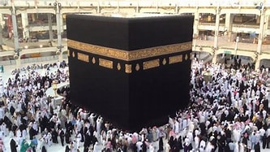

الحج
آخر أركان الإسلام هو الحجّ الذي فرضهُ الله -تعالى- على المسلمين مرّةً واحدةً في حياة الإنسان، بشرط القدرة الصحيّة والماليّة، وأن يكون الطّريق إلى الحجّ آمناً بحيث إذا ترك بلاده، وسافر للحج فإنّه يأمن الطريق وشروره على الأغلب، فإن لم يأمن الطّريق، وغلب على الظنّ الهلاك إذا خرج من بلده؛ فتنتفي القدرة بانعدام أمن الطّريق، وذلك لقوله -تعالى-: (وَلِلَّهِ عَلَى النَّاسِ حِجُّ الْبَيْتِ مَنِ اسْتَطَاعَ إِلَيْهِ سَبِيلًا وَمَنْ كَفَرَ فَإِنَّ اللَّهَ غَنِيٌّ عَنِ الْعَالَمِينَ) [آل عمران: آية 97]. أمّا معنى الحجّ، فقد عرّف العلماءُ الحج بأنه: "قصدُ بيت الله تعالى بصفةٍ مخصوصةٍ في وقتٍ مخصوصٍ، بشرائطَ وأركانٍ وفروعٍ مخصوصةٍ".[٥] ويكون توقيت الحج في شهر ذي الحجة من كل عام.
